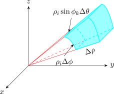
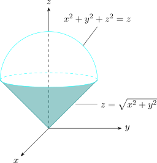

3.10 Spherical Coordinates
Recall the spherical coordinates \[x = \rho \sin \phi \cos \theta ,\qquad y = \rho \sin \phi \sin \theta ,\qquad z = \rho \cos \phi .\] They suit solids bounded by spheres and cones about the \(z\)-axis. The analogue of a box is a spherical wedge \[ E = \{ (\rho , \theta , \phi ) \mid a\leq \rho \leq b,\ \alpha \leq \theta \leq \beta ,\ c \leq \phi \leq d\},\] where \(a\geq 0\), \(\beta - \alpha \leq 2\pi \) and \(d-c \leq \pi \). Divide it into small wedges \(E_{ijk}\) by spheres \(\rho = \rho _i\), half-planes \(\theta = \theta _j\) and cones \(\phi = \phi _k\). Each small wedge is approximately a box with edges \(\Delta \rho \) (along a radius), \(\rho _i\,\Delta \phi \) (along an arc of a circle of radius \(\rho _i\)) and \(\rho _i\sin \phi _k\,\Delta \theta \) (along an arc of a circle of radius \(\rho _i\sin \phi _k\), the distance from the \(z\)-axis), so its volume is about \[\Delta V\approx \rho _i^2\sin \phi _k\,\Delta \rho \,\Delta \theta \,\Delta \phi .\]

The Riemann sums \[\sum ^l_{i=1}\sum ^m_{j=1}\sum ^n_{k=1} f(\rho _i \sin \phi _k \cos \theta _j,\ \rho _i \sin \phi _k \sin \theta _j,\ \rho _i \cos \phi _k)\,\rho ^2_i\sin \phi _k\, \Delta \rho \, \Delta \theta \, \Delta \phi \] then converge to the following.
Theorem 3.10.1 (Triple integrals in spherical coordinates). If \(f\) is continuous on the spherical wedge \(E\) above, then \[\iiint \limits _E f(x,y,z)\,dV = \int ^d_c\int ^{\beta }_{\alpha } \int ^b_a f(\rho \sin \phi \cos \theta ,\ \rho \sin \phi \sin \theta ,\ \rho \cos \phi )\,\rho ^2\sin \phi \, d\rho \, d\theta \, d\phi .\]
That is, replace \(dV\) by \(\rho ^2\sin \phi \,d\rho \,d\theta \,d\phi \). The factor \(\rho ^2\sin \phi \) is the Jacobian of the spherical coordinates, as the subsection on change of variables confirms.
Example 3.10.2. Evaluate \(\iiint _B e^{(x^2 + y^2 +z^2)^{3/2}}\,dV\), where \(B\) is the unit ball \(\{(x,y,z) \mid x^2 + y^2 + z^2 \leq 1\}\).
Solution. In spherical coordinates \(B = \{(\rho ,\theta ,\phi ) \mid 0\leq \rho \leq 1,\ 0 \leq \theta \leq 2\pi ,\ 0\leq \phi \leq \pi \}\) and \(x^2 + y^2 + z^2 = \rho ^2\), so \begin {align*} \iiint \limits _B e^{(x^2+y^2+z^2)^{3/2}}\, dV & = \int ^{\pi }_0 \int ^{2\pi }_0 \int ^1_0 e^{\rho ^3}\, \rho ^2 \, \sin \phi \, d\rho \, d\theta \, d\phi = \int ^{\pi }_0\sin \phi \,d\phi \int ^{2\pi }_0d\theta \int ^1_0\rho ^2 e^{\rho ^3}d\rho \\ & = 2\cdot 2\pi \cdot \frac {e - 1}{3} = \frac {4\pi }{3}(e -1) . \end {align*}
In rectangular coordinates the same integral is \[\int ^1_{-1}\int ^{\sqrt {1-x^2}}_{-\sqrt {1-x^2}}\int ^{\sqrt {1-x^2 -y^2}}_{-\sqrt {1 - x^2 - y^2}}e^{(x^2+y^2+z^2)^{3/2}} \,dz\,dy\,dx ,\] which could not be evaluated by elementary means.
Example 3.10.3. Use spherical coordinates to find the volume of the solid that lies above the cone \(z = \sqrt {x^2 + y^2}\) and below the sphere \(x^2 + y^2 + z^2 = z\).

Solution. Completing the square, the sphere is \(x^2 + y^2 + \left ( z - \frac {1}{2}\right )^2 = \frac {1}{4}\), of radius \(\frac 12\) and centre \(\left (0,0,\frac 12\right )\). In spherical coordinates it is \(\rho ^2 = \rho \cos \phi \), that is \(\rho = \cos \phi \). The cone is \[\rho \cos \phi = \sqrt {\rho ^2 \sin ^2\phi \cos ^2 \theta + \rho ^2 \sin ^2\phi \sin ^2\theta } = \rho \sin \phi ,\] that is \(\phi = \frac {\pi }{4}\). So \[E = \left \{(\rho ,\theta ,\phi ) \mid 0\leq \theta \leq 2\pi ,\ 0 \leq \phi \leq \frac {\pi }{4},\ 0\leq \rho \leq \cos \phi \right \}\] and \begin {align*} V & = \int ^{2\pi }_0\int ^{\pi /4}_0 \int ^{\cos \phi }_0 \rho ^2 \, \sin \phi \, d\rho \, d\phi \, d\theta = \frac {2\pi }{3}\int ^{\pi /4}_0 \sin \phi \cos ^3 \phi \, d\phi \\ & = \frac {2\pi }{3}\left [-\frac {\cos ^4\phi }{4}\right ]_0^{\pi /4} = \frac {2\pi }{3}\cdot \frac 14\left (1 - \frac 14\right ) = \frac {\pi }{8} . \end {align*}
Example 3.10.4. Use spherical coordinates to show that the volume of a ball of radius \(a\) is \(\frac 43\pi a^3\), and find the volume of the part of it that lies above the cone \(\phi = \frac {\pi }{3}\).
Solution. \[V = \int _0^{\pi }\int _0^{2\pi }\int _0^a\rho ^2\sin \phi \,d\rho \,d\theta \,d\phi = 2\cdot 2\pi \cdot \frac {a^3}{3} = \frac 43\pi a^3 .\] Above the cone, \(\phi \) runs only from \(0\) to \(\frac {\pi }{3}\), and \(\int _0^{\pi /3}\sin \phi \,d\phi = 1 - \cos \frac {\pi }{3} = \frac 12\) replaces \(2\), giving \(\frac {\pi a^3}{3}\), one quarter of the ball.
Questions on this section
Stuck on something here? Ask below and it stays attached to this topic.